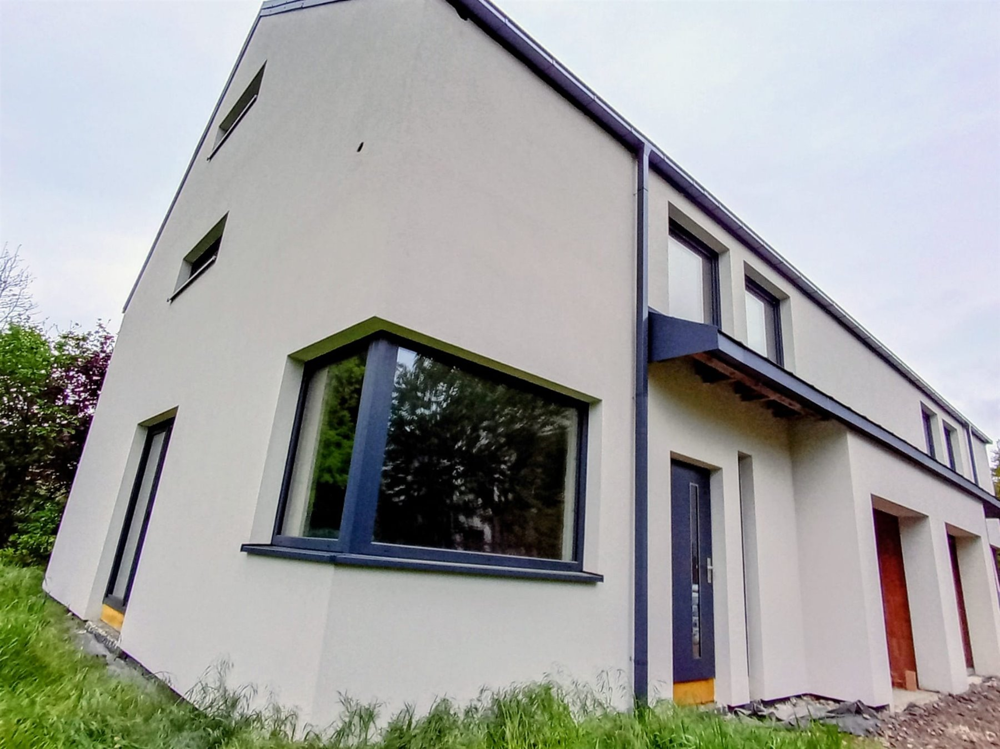
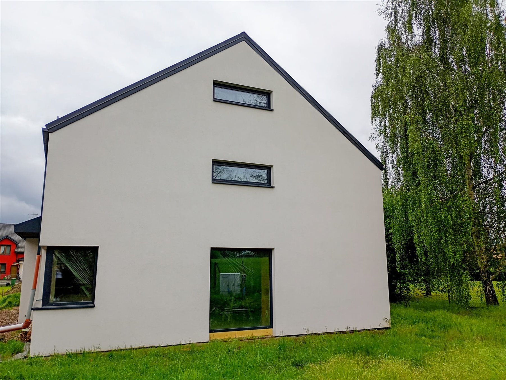
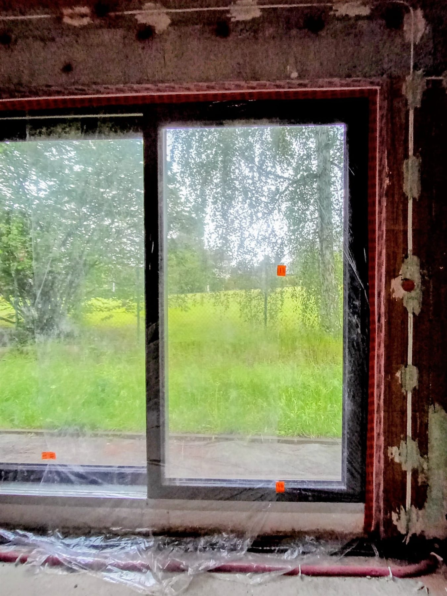
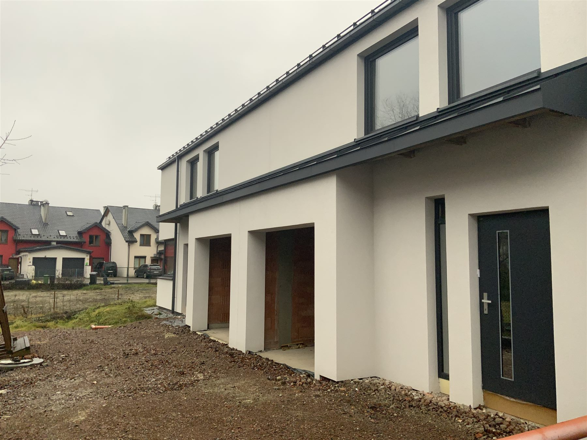
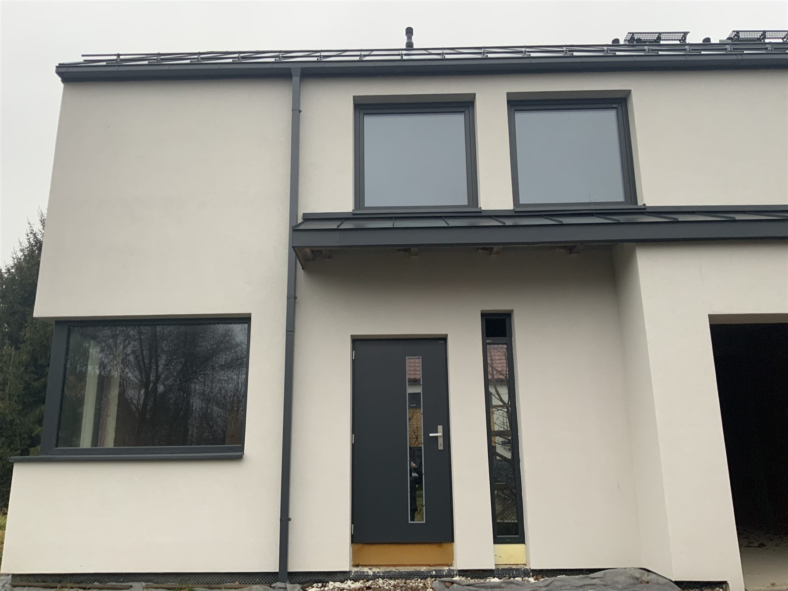
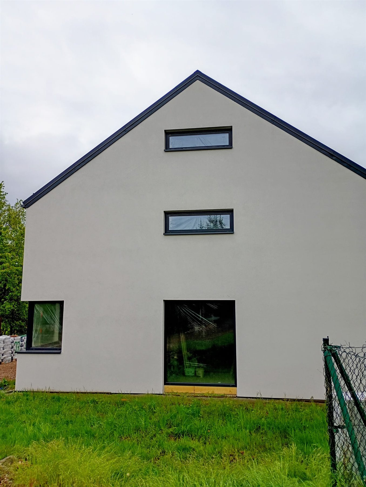
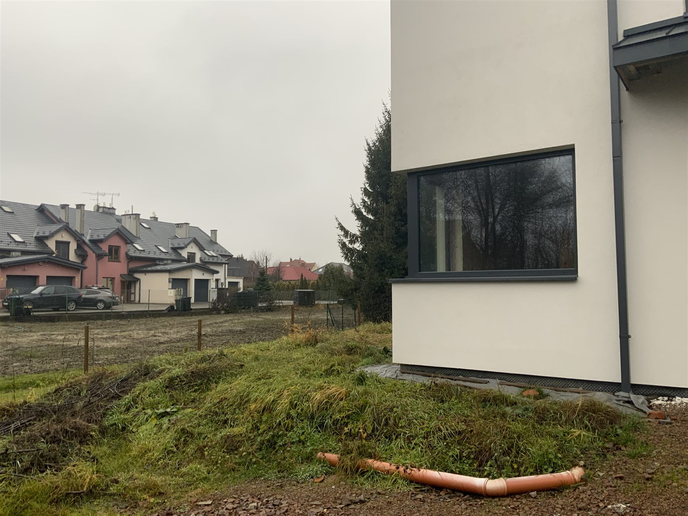
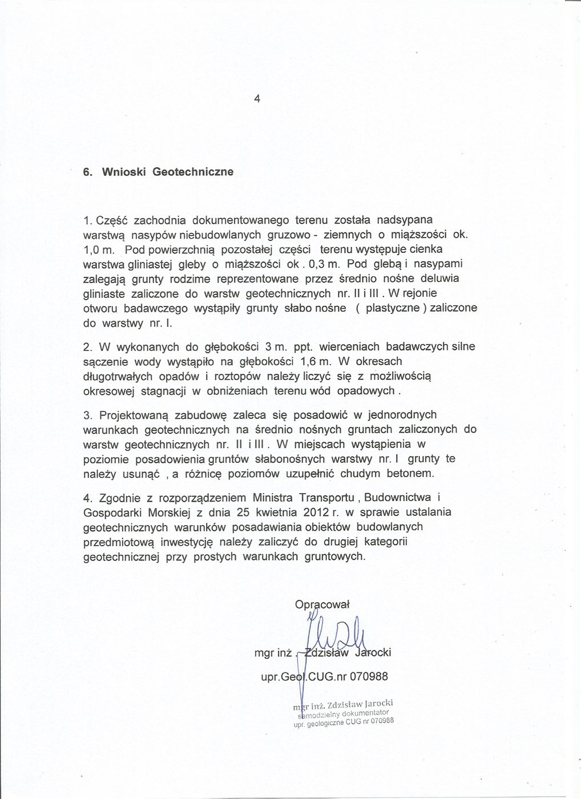

Kraków Opatkowice · ul. ks. F. Maja
Nowy dom w spokojnej części południowego Krakowa.
Segment w zabudowie bliźniaczej z nowoczesną, jasną elewacją, dużymi przeszkleniami, miejscem garażowym i ogrodem. Strona uwzględnia rzuty oraz dokumentację geotechniczną przygotowaną dla inwestycji.
Galeria
Nowoczesna bryła, spokojna ulica i przestrzeń na własne wykończenie.
Zdjęcia pokazują aktualny etap budynku: elewację, stolarkę, wejście, garaż oraz otoczenie działki. To czytelna baza dla kupującego, który chce dopracować wnętrza i ogród według własnego planu.

Elewacja od strony ogrodu
Widok z wnętrza na ogród
Budynek od strony wejść
Front segmentu Dojazd i garaże
Dojazd i garaże Narożnik domu z ogrodem
Narożnik domu z ogrodem
Zielona część działki
Boczna część domu i ogród Elewacja boczna
Elewacja boczna Nowoczesna bryła
Nowoczesna bryła Detal stolarki okiennej
Detal stolarki okiennejCharakter domu
Dom, który łączy miejski adres z kameralnym, podmiejskim rytmem.
Nieruchomość znajduje się przy ul. ks. F. Maja w Krakowie, w rejonie Opatkowic i obrębu Podgórze. To okolica niskiej zabudowy, lokalnych ulic i zielonych działek, z szybkim wyjazdem w stronę południowej obwodnicy oraz centrum miasta.
Bryła jest prosta i współczesna: jasna elewacja, grafitowa stolarka, duże okna oraz garaż w parterze. Stan budynku dobrze nadaje się do prezentacji jako dom do indywidualnego wykończenia.
Podstawowe dane
- Typ dom jednorodzinny
- Zabudowa bliźniacza
- Kondygnacje parter + piętro
- Adres ul. ks. F. Maja
- Miasto Kraków
Atuty codzienne
- Garaż w bryle
- Okna duże przeszklenia
- Ogród przy segmencie
- Dojazd lokalna ulica
- Otoczenie niska zabudowa
Dokumenty
- Rzut parteru PDF
- Rzut piętra PDF
- Badania podłoża skany
- Opinia geotechniczna 2015
- Inwestycja dz. 61/38, 61/39
Dla kogo
- Rodzina tak
- Praca z domu dobry układ
- Ogród i prywatność ważny atut
- Własne wykończenie duży potencjał
- Dojazd samochodem wygodny
Rzuty
Parter i piętro jako dwa czytelne poziomy funkcjonalne.
Do materiałów dołączone są dwa PDF-y z rzutami: parteru oraz piętra. Na stronie są dostępne jako podgląd i bezpośrednie linki, żeby można było szybko otworzyć je w pełnym widoku podczas rozmowy z kupującym.
Parter
Strefa wejściowa, dzienna i garaż.
Parter jest naturalnym miejscem na codzienną część domu: wejście, komunikację, salon z wyjściem w stronę ogrodu oraz garaż w bryle budynku.
Otwórz rzut parteruPiętro
Prywatna kondygnacja domowników.
Piętro może pełnić funkcję strefy sypialnianej z pokojami prywatnymi, miejscem do pracy i łazienką. To układ, który łatwo dopasować do rodziny.
Otwórz rzut piętraGeotechnika
Dokumentacja podłoża przygotowana dla inwestycji przy ul. ks. F. Maja.
Opracowanie GEO-SAN z października 2015 r. dotyczy budowy dwóch budynków mieszkalnych jednorodzinnych w zabudowie bliźniaczej na działkach 61/38 i 61/39, obręb 87 Podgórze. Poniżej pokazujemy najważniejsze informacje w formie sprzedażowego skrótu oraz skany źródłowe.
Warunki gruntowe
Dokumentacja wskazuje proste warunki gruntowe i zaliczenie inwestycji do drugiej kategorii geotechnicznej.
Posadowienie
Projektowane posadowienie opisano na ławach fundamentowych na głębokości około 1,5 m poniżej poziomu terenu.
Ukształtowanie terenu
Teren opisano jako północny skłon wyniesienia Góry Borkowskiej, z rzędnymi około 226,10-227,10 m n.p.m.
Woda i odwodnienie
W dokumentacji nie przewidziano oddziaływania wód gruntowych na obiekt ani odwadniania wykopów podczas prac ziemnych.
 Strona tytułowa geotechniki
Strona tytułowa geotechniki

Wnioski geotechniczne Mapa dokumentacyjna
Mapa dokumentacyjna
 Przekrój geotechniczny
Przekrój geotechniczny
Mapa poglądowa
Położenie przy ul. ks. Franciszka Maja, blisko A4 i południowych dzielnic Krakowa.
Dodana mapa dobrze pokazuje kontekst: Opatkowice, sąsiedztwo Klinów, szybki dostęp do Zakopianki i węzła autostrady A4 oraz spokojniejsze, zielone otoczenie na południu miasta.
 Mapa poglądowa lokalizacji
Mapa poglądowa lokalizacji
Lokalizacja
Opatkowice: spokojniej niż w centrum, nadal w granicach Krakowa.
Ul. ks. F. Maja leży w południowej części Krakowa, w rejonie Opatkowic, blisko lokalnej zabudowy jednorodzinnej i terenów zielonych. To dobry adres dla osób, które chcą mieć własny dom, ogród i garaż, a jednocześnie zostać w miejskiej strukturze Krakowa.
Opatkowice
Podgórze
ul. ks. F. Maja
niska zabudowa
lokalna ulica
ogród
garaż
południowy Kraków
Prezentacja domu
Najlepiej zobaczyć bryłę, ogród i układ na miejscu.
Umów prezentację, sprawdź rzuty, obejrzyj garaż i zobacz, jak dom układa się względem działki oraz sąsiedniej zabudowy.